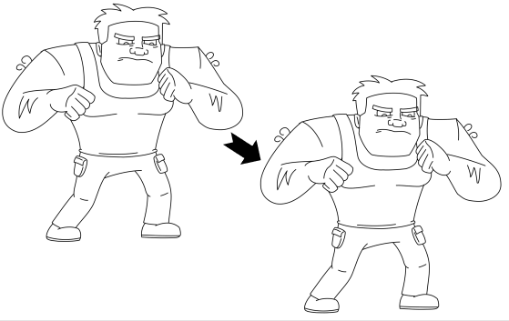
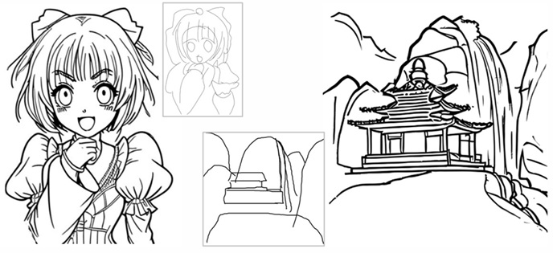
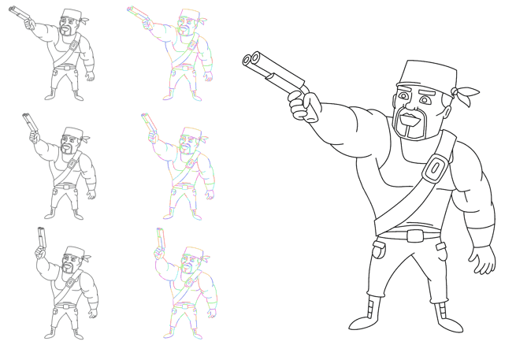
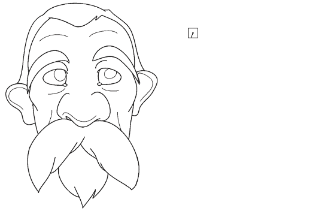
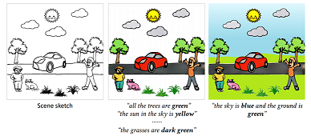
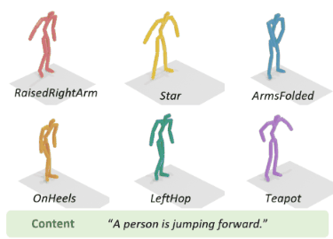
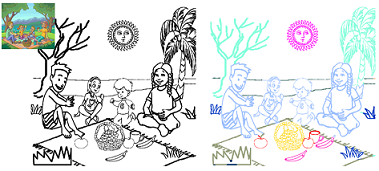

Creative Intelligence and Synergy Lab
Computational Media and Arts (CMA), Information Hub
The Hong Kong University of Science and Technology (Guangzhou)
Guangzhou, China
Email: haoranmo (at) hkust-gz.edu.cn / mohaor (at) alumni.sysu.edu.cn
Haoran MO is currently a postdoctoral researcher in
Creative Intelligence and Synergy Lab
of The Hong Kong University of Science and Technology (Guangzhou),
advised by Prof. Zeyu WANG.
He received the Ph.D. degree from
Intelligent and Multimedia Science Laboratory
of Sun Yat-sen University (SYSU),
co-supervised by Prof. Ruomei WANG and Prof. Chengying GAO.
He was invited as a visiting researcher at Simo-Serra Lab. (Waseda University, Tokyo, Japan) in 2019,
working with Prof. Edgar Simo-Serra.
Research interests:
Sketch-based Visual Creation
2D/3D Animation
Multi-modal LLM
Academic Experiences
|
The Hong Kong University of Science and Technology (Guangzhou) Aug. 2024 - Now
Postdoctoral Researcher |
|
|
Simo-Serra Lab., Waseda University (Tokyo, Japan) May-July 2019
Visiting Researcher, working with Prof. Edgar Simo-Serra. |
Education
|
Selected Publications
'#' indicates equal contribution. '*' indicates corresponding author.
|
 |
Haoran Mo, Zhongyue Guan, Yixin Hu and Zeyu Wang ACM Transactions on Graphics (SIGGRAPH 2026, Journal track) (CCF-A)
Project Page
Paper
Supplementary
Code
Abstract
Bibtex
Establishing one-to-one stroke correspondences is fundamental to vector-based animation inbetweening. Animators may face great challenges when handling occlusion, as occluded strokes must be drawn explicitly in keyframes and manually hidden frame by frame after stroke interpolation. To reduce tedious effort, we present LayerInbetween, an occlusion-aware framework for vector stroke correspondence and automatic inbetweening. It performs automatic layering to guide stroke tracing and correspondence finding for occluded strokes, and to resolve occlusion with layers in the inbetween frames. To predict occluded strokes, we propose a Global-Local Layer Transformation (GLLT) module that progressively improves the spatial alignment of strokes across keyframes via layer guidance, thereby indicating their potential positions. Our framework is trained on a synthetic dataset comprising 17k+ pairs of keyframes with occlusion and their stroke correspondences. Extensive experiments demonstrate the effectiveness of LayerInbetween compared with existing methods and its generalization capabilities to various types of drawings. In addition to its superior performance, our vector-based inbetweening method enables more flexible editing of 2D animation than raster-based video generation.
@article{mo2026layerinbetween,
title={LayerInbetween: Occlusion-Aware Stroke Correspondence and Inbetweening with Automatic Layering},
author={Mo, Haoran and Guan, Zhongyue and Hu, Yixin and Wang, Zeyu},
journal={ACM Transactions on Graphics (TOG)},
volume={45},
number={4},
pages={1--18},
year={2026},
publisher={ACM New York, NY, USA}
}
|
|
 |
Haoran Mo, Yulin Shen, Edgar Simo-Serra and Zeyu Wang IEEE Transactions on Visualization and Computer Graphics (TVCG 2025) (CCF-A)
Project Page
Paper
Supplementary
Code
Abstract
Bibtex
Creating high-quality line art in a fast and controlled manner plays a crucial role in anime production and concept design. We present DoodleAssist, an interactive and progressive line art generation system controlled by sketches and prompts, which helps both experts and novices concretize their design intentions or explore possibilities. Built upon a controllable diffusion model, our system performs progressive generation based on the last generated line art, synthesizing regions corresponding to drawn or modified strokes while keeping the remaining ones unchanged. To facilitate this process, we propose a latent distribution alignment mechanism to enhance the transition between the two regions and allow seamless blending, thereby alleviating issues of region incoherence and line discontinuity. Finally, we also build a user interface that allows the convenient creation of line art through interactive sketching and prompts. Qualitative and quantitative comparisons against existing approaches and an in-depth user study demonstrate the effectiveness and usability of our system. Our system can benefit various applications such as anime concept design, drawing assistant, and creativity support for children.
@article{mo2025doodleassist,
title = {DoodleAssist: Progressive Interactive Line Art Generation with Latent Distribution Alignment},
author = {Mo, Haoran and Shen, Yulin and Simo-Serra, Edgar and Wang, Zeyu},
journal = {IEEE Transactions on Visualization and Computer Graphics (TVCG)},
year = {2025}
}
|
|
 |
Haoran Mo, Chengying Gao* and Ruomei Wang ACM Transactions on Graphics (Presented at SIGGRAPH 2024) (CCF-A)
Project Page
Paper
Supplementary
Code
Abstract
Bibtex
To alleviate human labor in redrawing keyframes with ordered vector strokes for automatic inbetweening, we for the first time propose a joint stroke tracing and correspondence approach. Given consecutive raster keyframes along with a single vector image of the starting frame as a guidance, the approach generates vector drawings for the remaining keyframes while ensuring one-to-one stroke correspondence. Our framework trained on clean line drawings generalizes to rough sketches and the generated results can be imported into inbetweening systems to produce inbetween sequences. Hence, the method is compatible with standard 2D animation workflow. An adaptive spatial transformation module (ASTM) is introduced to handle non-rigid motions and stroke distortion. We collect a dataset for training, with 10k+ pairs of raster frames and their vector drawings with stroke correspondence. Comprehensive validations on real clean and rough animated frames manifest the effectiveness of our method and superiority to existing methods.
@article{mo2024joint,
title = {Joint Stroke Tracing and Correspondence for 2D Animation},
author = {Mo, Haoran and Gao, Chengying and Wang, Ruomei},
journal = {ACM Transactions on Graphics (TOG)},
year = {2024}
}
|
|
 |
Haoran Mo, Edgar Simo-Serra, Chengying Gao*, Changqing Zou and Ruomei Wang ACM Transactions on Graphics (SIGGRAPH 2021, Journal track) (CCF-A)
Project Page
Paper
Supplementary
Code
Abstract
Bibtex
Vector line art plays an important role in graphic design, however, it is tedious to manually create. We introduce a general framework to produce line drawings from a wide variety of images, by learning a mapping from raster image space to vector image space. Our approach is based on a recurrent neural network that draws the lines one by one. A differentiable rasterization module allows for training with only supervised raster data. We use a dynamic window around a virtual pen while drawing lines, implemented with a proposed aligned cropping and differentiable pasting modules. Furthermore, we develop a stroke regularization loss that encourages the model to use fewer and longer strokes to simplify the resulting vector image. Ablation studies and comparisons with existing methods corroborate the efficiency of our approach which is able to generate visually better results in less computation time, while generalizing better to a diversity of images and applications.
@article{mo2021virtualsketching,
title = {General Virtual Sketching Framework for Vector Line Art},
author = {Mo, Haoran and Simo-Serra, Edgar and Gao, Chengying and Zou, Changqing and Wang, Ruomei},
journal = {ACM Transactions on Graphics (TOG)},
year = {2021},
volume = {40},
number = {4},
pages = {51:1--51:14}
}
|
|
 |
Changqing Zou#, Haoran Mo#(Joint First Author), Chengying Gao*, Ruofei Du and Hongbo Fu ACM Transactions on Graphics (SIGGRAPH Asia 2019, Journal track) (CCF-A)
Project Page
Paper
Supplementary
Code
Slide
Abstract
Bibtex
Being natural, touchless, and fun-embracing, language-based inputs have been demonstrated effective for various tasks from image generation to literacy education for children. This paper for the first time presents a language-based system for interactive colorization of scene sketches, based on semantic comprehension. The proposed system is built upon deep neural networks trained on a large-scale repository of scene sketches and cartoon-style color images with text descriptions. Given a scene sketch, our system allows users, via language-based instructions, to interactively localize and colorize specific foreground object instances to meet various colorization requirements in a progressive way. We demonstrate the effectiveness of our approach via comprehensive experimental results including alternative studies, comparison with the state-of-the-art methods, and generalization user studies. Given the unique characteristics of language-based inputs, we envision a combination of our interface with a traditional scribble-based interface for a practical multimodal colorization system, benefiting various applications.
@article{zouSA2019sketchcolorization,
title = {Language-based Colorization of Scene Sketches},
author = {Zou, Changqing and Mo, Haoran and Gao, Chengying and Du, Ruofei and Fu, Hongbo},
journal = {ACM Transactions on Graphics (TOG)},
year = {2019},
volume = {38},
number = {6},
pages = {233:1--233:16}
}
|
|
 |
Yatian Wang, Haoran Mo and Chengying Gao* IEEE Transactions on Visualization and Computer Graphics (TVCG 2025) (CCF-A)
Paper
Abstract
Bibtex
To address the issue of style expression in existing text-driven human motion synthesis methods, we propose DiFusion, a framework for diversely stylized motion generation. It offers flexible control of content through texts and style via multiple modalities, i.e., textual labels or motion sequences. Our approach employs a dual-condition motion latent diffusion model, enabling independent control of content and style through flexible input modalities. To tackle the issue of imbalanced complexity between the text-motion and style-motion datasets, we propose the Digest-and-Fusion training scheme, which digests domain specific knowledge from both datasets and then adaptively fuses them into a compatible manner. Comprehensive evaluations demonstrate the effectiveness of our method and its superiority over existing approaches in terms of content alignment, style expressiveness, realism, and diversity. Additionally, our approach can be extended to practical applications, such as motion style interpolation.
@article{wang2025difusion,
title = {DiFusion: Flexible Stylized Motion Generation Using Digest-and-Fusion Scheme},
author = {Wang, Yatian and Mo, Haoran and Gao, Chengying},
journal = {IEEE Transactions on Visualization and Computer Graphics (TVCG)},
year = {2025}
}
|
|
 |
Changqing Zou#, Qian Yu#, Ruofei Du, Haoran Mo, Yi-Zhe Song, Tao Xiang, Chengying Gao, Baoquan Chen* and Hao Zhang European Conference on Computer Vision (ECCV 2018) (CCF-B)
Project Page
Paper
Poster
Code
Abstract
Bibtex
We contribute the first large-scale dataset of scene sketches, SketchyScene, with the goal of advancing research on sketch understanding at both the object and scene level. The dataset is created through a novel and carefully designed crowdsourcing pipeline, enabling users to efficiently generate large quantities realistic and diverse scene sketches. SketchyScene contains more than 29,000 scene-level sketches, 7,000+ pairs of scene templates and photos, and 11,000+ object sketches. All objects in the scene sketches have ground-truth semantic and instance masks. The dataset is also highly scalable and extensible, easily allowing augmenting and/or changing scene composition. We demonstrate the potential impact of SketchyScene by training new computational models for semantic segmentation of scene sketches and showing how the new dataset enables several applications including image retrieval, sketch colorization, editing, and captioning, etc.
@inproceedings{zou2018sketchyscene,
title={Sketchyscene: Richly-annotated scene sketches},
author={Zou, Changqing and Yu, Qian and Du, Ruofei and Mo, Haoran and Song, Yi-Zhe and Xiang, Tao and Gao, Chengying and Chen, Baoquan and Zhang, Hao},
booktitle={Proceedings of the european conference on computer vision (ECCV)},
pages={421--436},
year={2018}
}
|
Open-source Contributions
Collection of edge detection papers and toolbox: Awesome-Edge-Detection-Papers
Collection of image and video colorization papers: Awesome-Image-Colorization
Collection of sketch-related research papers: Awesome-Sketch-Based-Applications
, Awesome-Sketch-Synthesis
Collection of referring image and video segmentation papers: Awesome-Referring-Image-Segmentation
Collection of 2D animation papers: Awesome-2D-Animation


Awards
-
CCF-CAD&CG优秀学生奖 (CCF-CAD&CG Excellent Student Award)（2021年度全国6位学生入选）, 2021
Academic Service
Program Committee Member: SIGGRAPH Asia '25.
Conference Session Chair: SIGGRAPH Asia '25.
Reviewer for Conferences: ACM SIGGRAPH, ACM SIGGRAPH Asia, ACM MM, Eurographics (EG), Pacific Graphics (PG).
Reviewer for Journals: ACM TOG, IEEE TVCG, IEEE TMM, IEEE TCSVT, CGF, PR.
Media
-
Dec. 2019: 草图上色只需动动嘴，中大、华为、谷歌等合作新研究，黑白漫画可批量上色: [微信公众号：AI科技评论] [雷锋网 (leiphone.com)] [搜狐网 (sohu.com)]
-
Dec. 2019: 中大、华为、谷歌合作最新研究黑白漫画场景可批量上色: [微信公众号：图像算法]